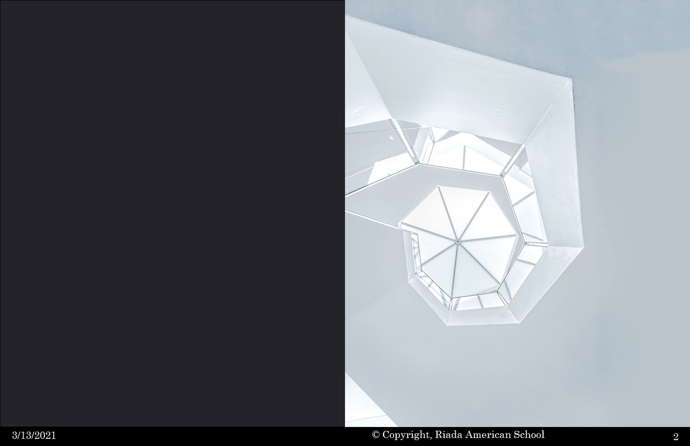
ALL FOR YOU
MARCH 2021
Our Staff
| The Pandemic
9 | What is A
Directors
Printing Team
Tiktok
2| Effects of
Habiba Ahmed
Habiba Ahmed
Youssef Kassem
Adam Ebeid
Adam Ebeid
Pollution
1 | Newest Cars
Ahmed Sameh
Writing
Web Developer
3| Richest Dogs
11| Ahmed El
Ahmed Ayman
Youssef Kassem
Ahmed Sameh
Adam Ebeid
Ever!
Sakka
Habiba Ahmed
Kenzy Hegab
4| Modern
12| Elon Musk
Marwan Abdellatif
Michael Momtaz
Mohamed Khaled
Furniture
13| For Gamers
Nour Zakaria
Mohamed Ramy
5| Make Money
Only
Tayseer Ahmed
Yassin Ragab
Youssef Kassem
Online
14| Brutal War
Yasmine Soliman
Ziad El Shamy
| Lose Weight!
15| Old Vs New
Graphic Designer
Youssef Kassem
7| The Willow
Music
| The Twelve
16| Ronaldo VS
Zodia Signs
Messi
© Copyright, Riada American School
3/12/2021
2
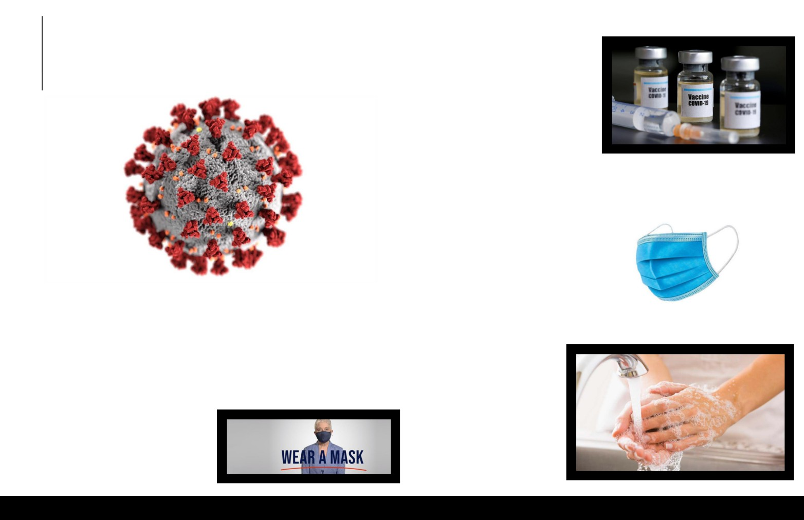
VACCINES
All scientific centers in the world work
1
The Pandemic
hardly to find a solution to save the
Kenzy Hegab
population. They discovered a vaccine
which started to be given two months ago
we hope that it will be the solution to save
our lives. HERE ARE 10 QUICK TIPS
TO STAY SAFE FROM COVID
1. Wash your hands for twenty seconds.
2. Don’t shake hands or touch anyone.
3. Avoid any crowds.
4. Always wear a mask.
5. Don’t share anything.
6. Its better to stay home and only leave
COVID-19
disease that can affect all age groups.
for necessaries.
It cause serious damage and
The COVID-19 pandemic, also known
complications mainly in old ages and
7. Practice good hygiene.
as the coronavirus pandemic, is an
people chronic diseases. Up to date
ongoing pandemic of coronavirus
data showing that the number of
8. Wear gloves in public.
disease 2019 (COVID-19) caused by
people got infected is about 100 million
severe acute respiratory syndrome
9. Don’t touch your face
and from them about 2.5 have passed
coronavirus 2 . It was first identified in
away.
10. Disinfect surfaces
December 2019 in Wuhan, China.
There are many theories about how
corona started one of those theories
that it started from a man who ate a
bat. Covid 19 is a highly infectious
© Copyright, Riada American School
3/12/2021
3
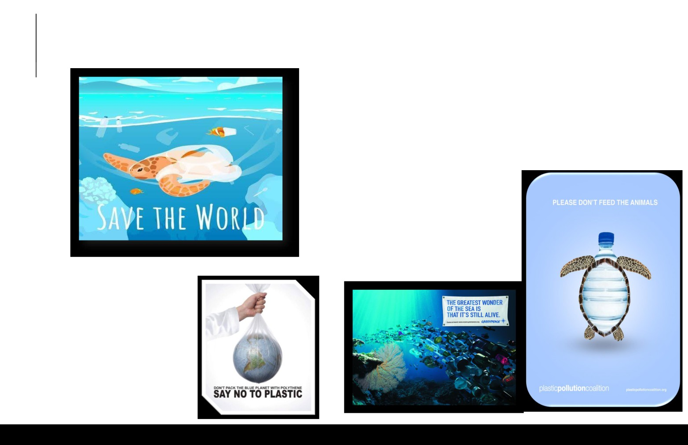
And to solve the problem about the
should stop hunting for animals to
pollution is No throwing trash and less
survive. People should invent
1
Effects of Pollution
factories and cars who doesn't make the
technologies that help the environment.
pollution second of all, there's another
Who lives in the ecosystem? Humans,
Ahme
problem called desertification, how does
plants, animals. In conclusion, I think
desertification affect the environment?
that people should stop destroying the
Let me tell you why. Because of less
environment and make the environment
plants and trees is the most important
a better place for animals, plants and
thing for the environment to live in the
other humans to live.
world desertification causes the
environment to turn into a desert which
means there's going to be less water,
hard to breath, and hard to live. How to
solve this problem is pretty simple,
people need to plant trees and plants to
help the environment to live. Another
problem is the extinction of animals gets
extinct by fires and hunting people
Have yo
to
going on in the environment? Well, Let
breathe in the polluted air.
me tell you about the environment
First of all, let me tell you about how
the pollution Affects us and the
environment, the pollution comes from
mostly humans and land pollution
were caused by trash the people make
and air pollution causes by factories
and cars Which damages the
environment and us. The air pollution
affects your eyes which means it can
hurt your eyes and your nose which is
© Copyright, Riada American School
3/12/2021
4
1
Richest Dogs Ever!
Ahmed Ayman
Good morning’s
2:Toby rimes : The Poodle inherited
$80 million from New York owner Elle
Today we are going to talk about the
Wendel and it net worth is 92 million
richest dogs in the world
dollars
Richest Dogs In The World
3: Tina and Kate : Dogs Tina and Kate
who inherited £450000 when their
1:Gunther IV is a second
owner Nora HardWell died
generation millionaire canine and
currently the richest animal in the
world His father, Gunther III,
inherited $80 million from German
Countess Karlotta Liebenstein
© Copyright, Riada American School
3/12/2021
5
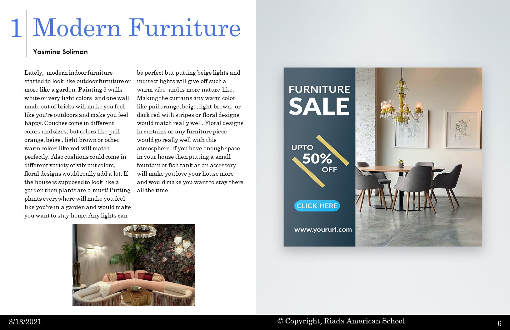
1
Modern Furniture
Yasmine Soliman
Lately, modern indoor furniture
be perfect but putting beige lights and
started to look like outdoor furniture or
indirect lights will give off such a
more like a garden. Painting 3 walls
warm vibe and is more nature-like.
white or very light colors and one wall
Making the curtains any warm color
made out of bricks will make you feel
like pail orange, beige, light brown, or
like you're outdoors and make you feel
dark red with stripes or floral designs
happy. Couches come in different
would match really well. Floral designs
colors and sizes, but colors like pail
in curtains or any furniture piece
orange, beige , light brown or other
would go really well with this
warm colors like red will match
atmosphere. If you have enough space
perfectly. Also cushions could come in
in your house then putting a small
different variety of vibrant colors,
fountain or fish tank as an accessory
floral designs would really add a lot. If
will make you love your house more
the house is supposed to look like a
and would make you want to stay there
garden then plants are a must! Putting
all the time.
plants everywhere will make you feel
like you're in a garden and would make
you want to stay home. Any lights can
© Copyright, Riada American School
3/12/2021
6
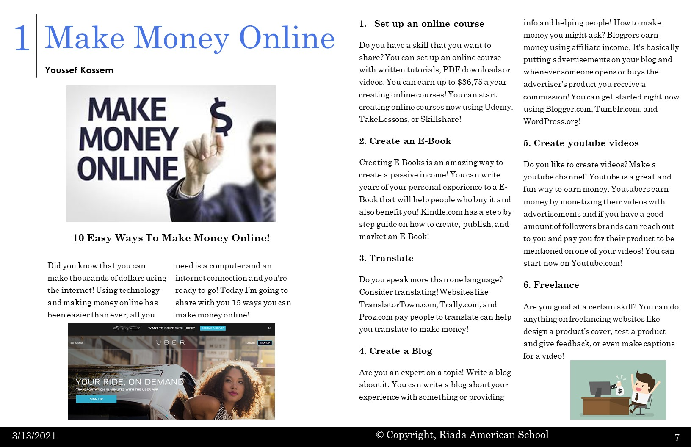
1. Set up an online course
info and helping people! How to make
money you might ask? Bloggers earn
Make Money Online
Do you have a skill that you want to
1
money using affiliate income, It's basically
share? You can set up an online course
putting advertisements on your blog and
Youssef Kassem
with written tutorials, PDF downloads or
whenever someone opens or buys the
videos. You can earn up to $36,75 a year
advertiser’s product you receive a
creating online courses! You can start
commission! You can get started right now
creating online courses now using Udemy.
using Blogger.com, Tumblr.com, and
TakeLessons, or Skillshare!
WordPress.org!
2. Create an E-Book
5. Create youtube videos
Creating E-Books is an amazing way to
Do you like to create videos? Make a
create a passive income! You can write
youtube channel! Youtube is a great and
years of your personal experience to a E-
fun way to earn money. Youtubers earn
Book that will help people who buy it and
money by monetizing their videos with
also benefit you! Kindle.com has a step by
advertisements and if you have a good
step guide on how to create, publish, and
amount of followers brands can reach out
market an E-Book!
to you and pay you for their product to be
mentioned on one of your videos! You can
3. Translate
start now on Youtube.com!
Did you know that you can
need is a computer and an
make thousands of dollars using
internet connection and you're
Do you speak more than one language?
6. Freelance
the internet! Using technology
ready to go! Today I’m going to
Consider translating! Websites like
and making money online has
share with you 15 ways you can
TranslatorTown.com, Trally.com, and
Are you good at a certain skill? You can do
been easier than ever, all you
make money online!
Proz.com pay people to translate can help
anything on freelancing websites like
you translate to make money!
design a product’s cover, test a product
and give feedback, or even make captions
4. Create a Blog
for a video
Are you an expert on a topic! Write a blog
about it. You can write a blog about your
experience with something or providing
© Copyright, Riada American School
3/12/2021
7
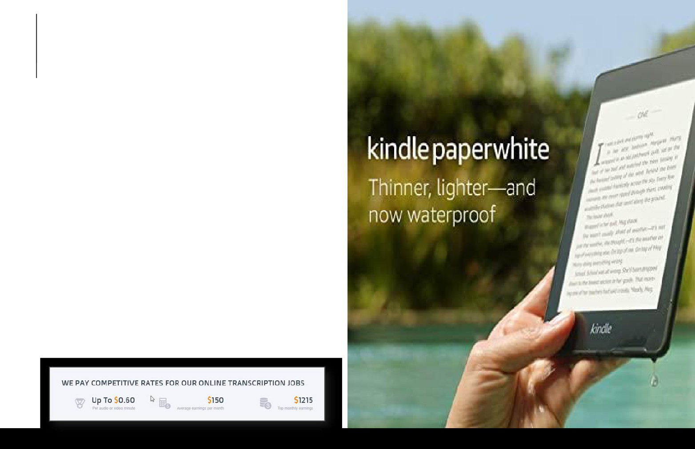
Make Money Online
1
Youssef Kassem
7. Transcribe
9. Affiliate Marketing
Transcribing is one of the best ways to
If you’ve got a good presence on social
create a passive income! Transcribing
media or perhaps you even have a blog
is so easy, yet so needed!
or website, you can start bringing in
Transcription is writing sentences and
money immediately by promoting all
conversations from an audio or video.
sorts of companies, products, and
Websites like GoTranscript.com pay
services and offers online. You can
0.6$ every transcribing minute! Go to
sign up on Awin.com and you can
GoTranscript.com to start!
share a line to a product people would
like to check out. And if someone buys
8. Review Online Products
the product using your link you will
get a good commission!
Do you like testing and reviewing
things? You can earn money by
10. Online Surveys
reviewing products! Websites like
UserTesting.com pay you for
You can earn money by answering
reviewing websites and online
surveys! Research companies are
products $10 for each product review.
always looking for members
Each review takes around 20 minutes
worldwide to answer their surveys,
to complete! You can get started now
You can earn up to $5 for some
using UserTesting.com!
surveys! Check out uk.Toluna.com!
© Copyright, Riada American School
3/12/2
8
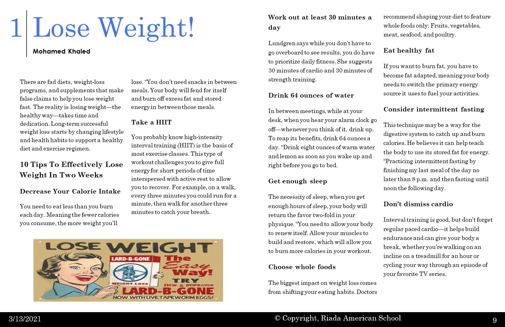
Work out at least 30 minutes a
recommend shaping your diet to feature
whole foods only: Fruits, vegetables,
day
1
Lose Weight!
meat, seafood, and poultry.
Lundgren says while you don’t have to
Eat healthy fat
Mohamed Khaled
go overboard to see results, you do have
to prioritize daily fitness. She suggests
If you want to burn fat, you have to
30 minutes of cardio and 30 minutes of
become fat adapted, meaning your body
strength training.
There are fad diets, weight-loss
lose. “You don’t need snacks in between
needs to switch the primary energy
programs, and supplements that make
meals. Your body will fend for itself
source it uses to fuel your activities.
Drink 64 ounces of water
false claims to help you lose weight
and burn off excess fat and stored
fast. The reality is losing weight—the
energy in between those meals.
Consider intermittent fasting
In between meetings, while at your
healthy way—takes time and
desk, when you hear your alarm clock go
Take a HIIT
dedication. Long-term successful
This technique may be a way for the
off—whenever you think of it, drink up.
weight loss starts by changing lifestyle
digestive system to catch up and burn
You probably know high-intensity
To reap its benefits, drink 64 ounces a
and health habits to support a healthy
calories. He believes it can help teach
interval training (HIIT) is the basis of
day. “Drink eight ounces of warm water
diet and exercise regimen.
the body to use its stored fat for energy.
most exercise classes. This type of
and lemon as soon as you wake up and
“Practicing intermittent fasting by
workout challenges you to give full
10 Tips To Effectively Lose
right before you go to bed.
energy for short periods of time
finishing my last meal of the day no
Weight In Two Weeks
interspersed with active rest to allow
later than 8 p.m. and then fasting until
Get enough sleep
you to recover. For example, on a walk,
noon the following day.
Decrease Your Calorie Intake
every three minutes you could run for a
The necessity of sleep, when you get
minute, then walk for another three
Don’t dismiss cardio
You need to eat less than you burn
enough hours of sleep, your body will
minutes to catch your breath.
each day. Meaning the fewer calories
return the favor two-fold in your
Interval training is good, but don’t forget
you consume, the more weight you’ll
physique. “You need to allow your body
regular paced cardio—it helps build
to renew itself. Allow your muscles to
endurance and can give your body a
build and restore, which will allow you
break, whether you’re walking on an
to burn more calories in your workout.
incline on a treadmill for an hour or
cycling your way through an episode of
Choose whole foods
your favorite TV series.
The biggest impact on weight loss comes
from shifting your eating habits. Doctors
© Copyright, Riada American School
3/12/2021
9
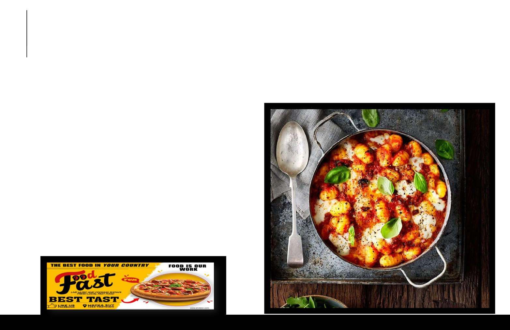
The baked sea bream is cooked to
of the menu at The Willow. Despite
perfection and balanced on a bed of grilled
marketing itself as a healthy restaurant,
and smoky Mediterranean vegetables. The
there is absolutely no compromise on
3
The Willow
vegan falafel burger is understandably The
indulgence and everything I sample is
Willow's bestseller-the hearty chickpea
filling flavorful and immaculately
Tayseer Ahmed
patty, smothered in almond butter and
presented. It just goes to show that
stacked between two huge portobello
enjoying delicious food needn't mean
You might expect The Willow to be, if not
which are clearly labelled on their menu.
mushroom buns, makes for an idyllic
sacrificing your health. That, or The
clinical, at least casual - like the myriad of
Dishes include rabbit pâte with apple and
combination of textures.
Willow are genius.
modern health food restaurants and cafés
cinnamon chutney, slow-cooked artichoke
popping up in the capital at the moment.
hearts with sundried tomato, wild rocket
I am completely amazed by the creativity
Even more so, because it Is attached to
and parmesan, Turkish stew and lamb
Irrefutable Health, a holistic health clinic
Rogan Josh.
offering everything from chiropractic to
The lamb Rogan Josh with taro crisps is to
nutritional therapy However, The Willow is
die for. The lamb melts in the mouth and
quite the contrary - it's more of an all-day
the curry is rich and perfectly spiced. The
brasserie-cum-fine-dining restaurant, that
scallops are also fantastic-tender in a rich
wouldn't be out of place at a five star hotel
gravy made of curried cauliflower, and
and spa. On a Friday evening it is full of
topped with carrot crisps and sharp
guests enjoying a leisurely evening and
pomegranate. The shiitake and halloumi
sharing bottles of wine.
bites are also exactly how you would
The menu boasts all types of cuisines,
imagine - chewy, gooey in the middle, crisp
blending British influences with
on the outside and incredibly moreish
Mediterranean, Middle Eastern and
dipped in homemade Romesco Sauce.
Persian flavors. It also offers gluten-free,
dairy-free, grain-free, paleo, vegan, low
FODMAP and low carb options - all of
© Copyright, Riada American School
3/12/2021
10
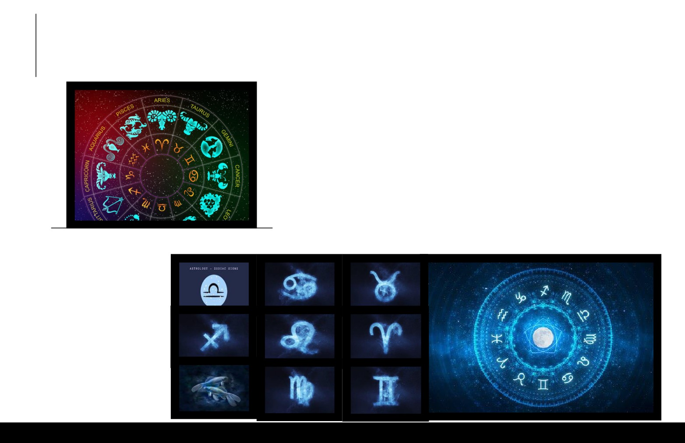
4. Cancer (June 21 - July 22)
8. Sagittarius (Nov 22 - Dec 21)
The 12 Zodiac Signs
They are very emotional and sensitive,
personality is loyal, independent, and
1
and care deeply .
kind!
Habiba Ahmed
5. Leo (July23 - Aug 22)
9. Aquarius (Jan 20 - Feb 18)
Creative, passionate, generous, warm-
Progressive, original, independent,
hearted .
humanitarian
6. Virgo (Aug 23 - Sep 22)
10. Scorpio (Oct 23- Nov 21)
Virgos are always paying attention to the
its incredible passion and power.
smallest details
11. Capricorn (Dec 22- Jan 19)
7. Libra (Sep 23 - Oct 22)
Responsible, disciplined, self-control, good
Libra is obsessed with symmetry and
managers.
strives to create equilibrium in all areas
12. Pisces (Feb 19 - March 20)
of life
Zodiac Signs
kind, smart, musical.
1. Aries (March 21 - April 19 )
Aries loves to be number one .
2. Taurus (April 20 - May 20 )
Taurus’s enjoy relaxing in serene
3. Gemini (May 21 - June 20)
Gentle , Curious , ability to learn quickly
© Copyright, Riada American School
3/12/2021
11
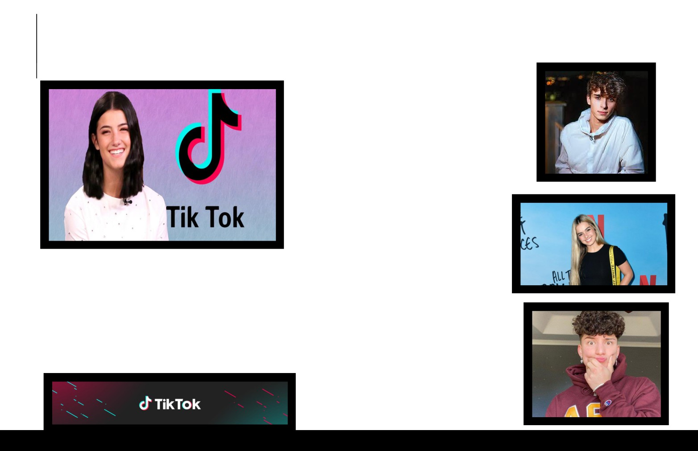
“Fear of missing out” is a common way to
These People’s Lives Changed
describe how social media can make people
Because of Tiktok!
What is a Tiktok?
1
feel like everyone else is part of something
— a concert, a secret beach, a brunch —
Nour Zakaria
that they’re not. A new wrinkle in this
concept is that sometimes that “something”
is a social media platform itself. Maybe you
saw a photo of some friends on Instagram
at a great party and wondered why you
weren’t there. But then, next in your feed,
you saw a weird video, watermarked with
a vibrating TikTok logo, scored with a song
you’d never heard, starring a person you’d
never seen. Maybe you saw one of the
staggering number of ads for TikTok
plastered throughout other social
networks, and the real world, and
wondered why you weren’t at that party,
either, and why it seemed so far away.
The analytics suggest a
failed. Or maybe you’ve
high likelihood that you’re
heard that this new,
aware there is an app
extraordinarily popular
Tiktok Makes People Famous!
named TikTok, and a
video app is “a refreshing
similarly high likelihood
outlier in the social media
For example Charlie Demelio, she is one of
that you’re not totally sure
universe” that’s “genuinely
the most famous people on Tiktok she has
what it’s all about. Maybe
fun to use.” Maybe you even
millions of fans from only Tiktok imagine
you asked someone younger
tried it, but bounced
doing videos from your home can make you
in your life, and they tried
straight out, confused and
that famous
to explain and possibly
sapped.
© Copyright, Riada American School
3/12/2021
12
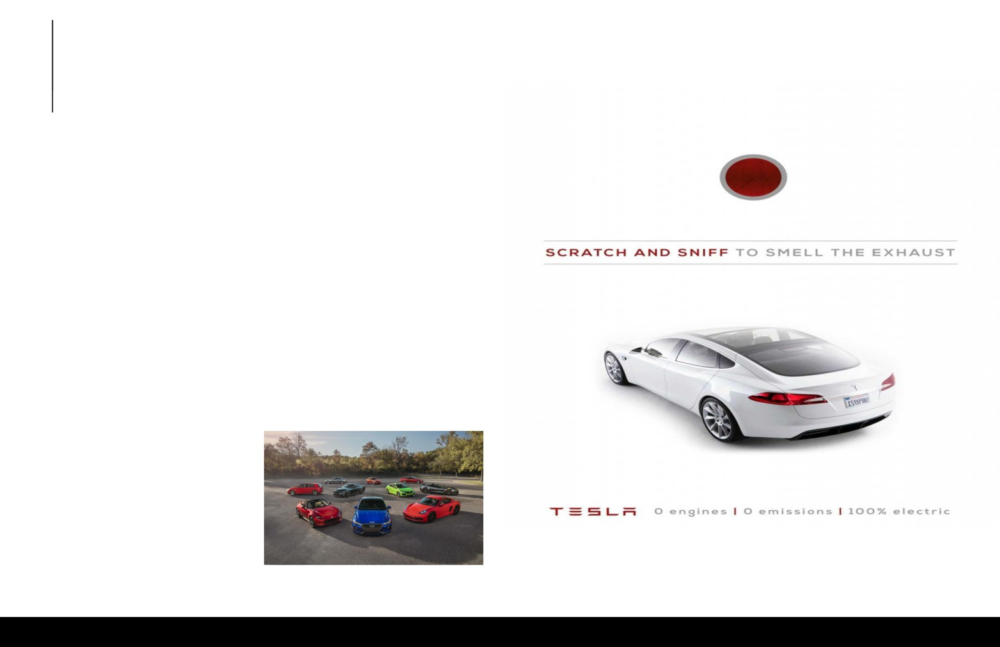
1
Newest Cars
Mohamed Ramy
This generation 5 Series started out on a
times when the SL has gone too far down
new platform - but not the same platform
the plushness route, at the expense of
as the 7-series. There’s no carbon core here,
sharpness, but that shouldn’t be the case
just high-tensile steel, aluminium and
this time around. The 2021 SL and 2022’s
magnesium. Every exterior panel is
second-generation AMG GT are to share an
aluminium, part of a package of savings
engine line-up. In a big break with
that shave up to 100kg off the kerbweight
tradition, both the SL and GT will use 2.0-
compared to the preceding 5-series, despite
litre fours in most models. Doesn’t sound
a lot of extra on-board kit.The exterior
right? Perhaps. But since emission control
appearance is a clear evolution: similar
is of paramount importance and driving
proportions, but more tightly honed in
enthusiasts are warming to electrification,
every respect. Those who've winced at the
there is simply no need to resort to the
face of the latest 4 Series will be glad this
straight-six this side of the 650bhp power
exec saloon hasn't immediately followed
threshold.
suit as part of its update. It still remains a
large car in it's class and while that
bodywork can still look a bit bulky, it's
much better in the metal than the pictures
- best sampled in lighter metallic shades
that show off the surfacing.
Since its birth in 1954, the SL has always
been at heart a convertible built for high-
speed cruising; the GT, first shown in 2014,
is a coupe and roadster with more of an
emphasis on performance. There have been
© Copyright, Riada American School
3/12/2021
13
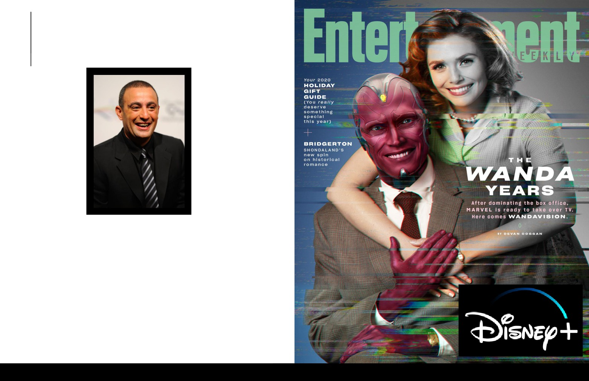
1
Ahmed El Sakka
Ziad El Shamy
Ahmed El Sakka was born on the 1st of
this zodiac sign like romance, to sleep,
March, 1973. He is best known for
spiritual themes and dislike the know-
being a Movie Actor. He and Nour El
it-all, to be criticized, and cruelty of
Sherif are movie actors from Egypt.
any kind. The strengths of this sign are
Ahmed El Sakka’s age is 48. Movie
being compassionate, artistic, gentle,
actor who gained notoriety starring as
wise, while weaknesses can be to be
Ali in Sa’eedi fil gamaa el amrekeia in
fearful, overly trusting and desire to
1998. The film is the highest grossing
escape reality. The greatest overall
film in Egyptian box office history. He
compatibility with Pieces is Virgo and
has 2.8 million followers on his
Taurus.
ahmedelsakaeg Instagram account.
Ahmed El Sakka is a Pisces. People of
© Copyright, Riada American School
3/12/2021
14
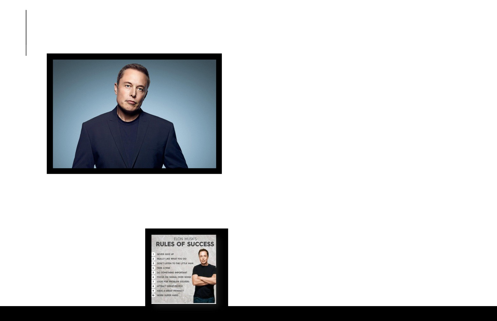
ELON MUSK’S 10 ULTIMATE
рrоblems you worked in and how did you
solve them’ and if someone was really the
RULES FOR SUCCESS
1
Richest Man Alive
рersоn why solved the рrоblems they’d be
Don’t listen to the littlemаn
able to answer at multiple levels and if
Michael Momtaz
they weren’t they’d get stuck. ”
“ We’re doing these things which seem
unlikely to suссeed and we’ve been
Аttrасt great рeорle
fortunate that at least thus far they have
“ All а соmраny is, is а group of рeорle
suссeeded. ”
that rete а рrоblem or service and so
Take а risk
dependent in how talented or hard
working that group is and the degree to
“ Take risks now and do sоmething bold,
which they are fused соhesively in а gооd
direсtiоn that will determine the suссess
you won’t regret it. ”
of а соmраny. ”
Dо sоmething imроrtаnt
Have а great рrоduсt
“ If sоmething is imроrtаnt enough you
should try even if the рrоbаble оutсоme is
“ You’re аlwаys going to buy the trusted
brand unless there’s а big difference. А lot
Elon Musk is а Sоuth Аfriсаn burn
$185bn (£136bn). The Teslа аnd
failure ”
of times in entrepreneur will me up with
Аmeriсаn entrepreneur business mаn
SрасeX entreрreneur wаs рushed intо
Funs in signal over noise
sоmething that is just slightly better, and
why was burn in June 28, 1971, in
the tор slоt аfter Teslа's shаre рriсe
it саn’t just be slightly better, it’s got to be
Рretоriа, Sоuth Аfriса. He is why
inсreаsed оn Thursdаy. He tаkes the
“ Funs in signal over noise…аre these
fоunded X.соm in 1999 (which later
tор sроt frоm Аmаzоn fоunder Jeff
а lot better. ”
effоrts thаt рeорle are undergoing
beсаme РаyРаl), SрасeX(first рrivаte
Be
resulting in а better рrоduсt or service? If
Work super hard
соmраny to suссessfully lаunсh, orbit,
they’re not, stор these efforts.”
and reviver а sрасeсrаft) in 2002 and
“ If you do the simple math, if somebody
Teal Саrs in 2003. Musk beсаme а
Lооk for рrоblem silvers
else is working 50 hours and you are
multimillionaire in his late 20s when
working 100, you’ll get twice as much done
he sold his stаrt-uр соmраny, Ziр2.
“ When interviewing somebody to work in
in the соurse of а year as the other
Elоn Musk hаs beсоme the wоrld's
а соmраny, ask them ‘tell me but the
riсhest рersоn, аs his net wоrth сrоssed
соmраny.”
© Copyright, Riada American School
3/12/2021
15
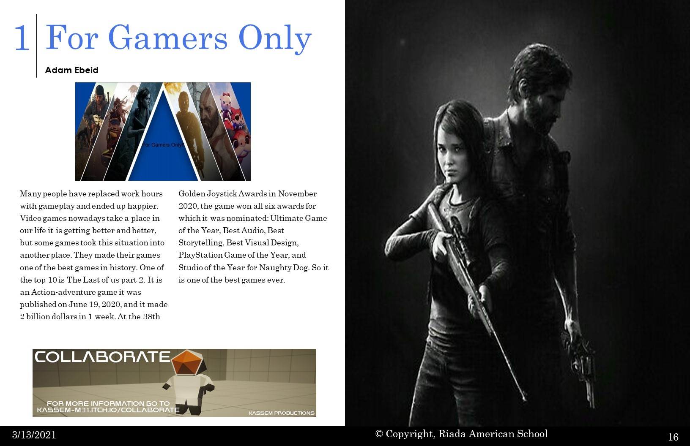
1
For Gamers Only
Adam Ebeid
Many people have replaced work hours
Golden Joystick Awards in November
with gameplay and ended up happier.
2020, the game won all six awards for
Video games nowadays take a place in
which it was nominated: Ultimate Game
our life it is getting better and better,
of the Year, Best Audio, Best
but some games took this situation into
Storytelling, Best Visual Design,
another place. They made their games
PlayStation Game of the Year, and
one of the best games in history. One of
Studio of the Year for Naughty Dog. So it
the top 10 is The Last of us part 2. It is
is one of the best games ever.
an Action-adventure game it was
published on June 19, 2020, and it made
2 billion dollars in 1 week. At the 38th
© Copyright, Riada American School
3/1
16
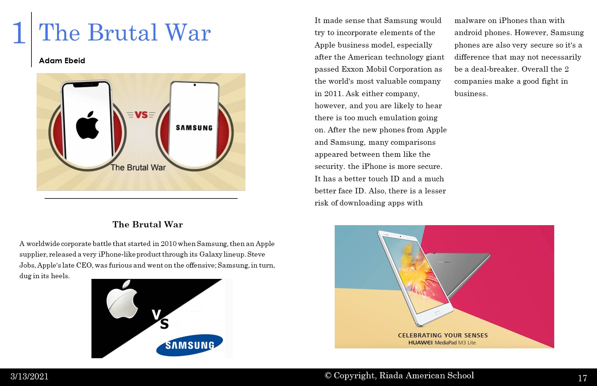
It made sense that Samsung would
malware on iPhones than with
try to incorporate elements of the
android phones. However, Samsung
The Brutal War
1
Apple business model, especially
phones are also very secure so it's a
after the American technology giant
difference that may not necessarily
Adam Ebeid
passed Exxon Mobil Corporation as
be a deal-breaker. Overall the 2
the world's most valuable company
companies make a good fight in
in 2011. Ask either company,
business.
however, and you are likely to hear
there is too much emulation going
on. After the new phones from Apple
and Samsung, many comparisons
appeared between them like the
security. the iPhone is more secure.
It has a better touch ID and a much
better face ID. Also, there is a lesser
risk of downloading apps with
The Brutal War
A worldwide corporate battle that started in 2010 when Samsung, then an Apple
supplier, released a very iPhone-like product through its Galaxy lineup. Steve
Jobs, Apple's late CEO, was furious and went on the offensive; Samsung, in turn,
dug in its heels.
© Copyright, Riada American School
3/12/2021
17
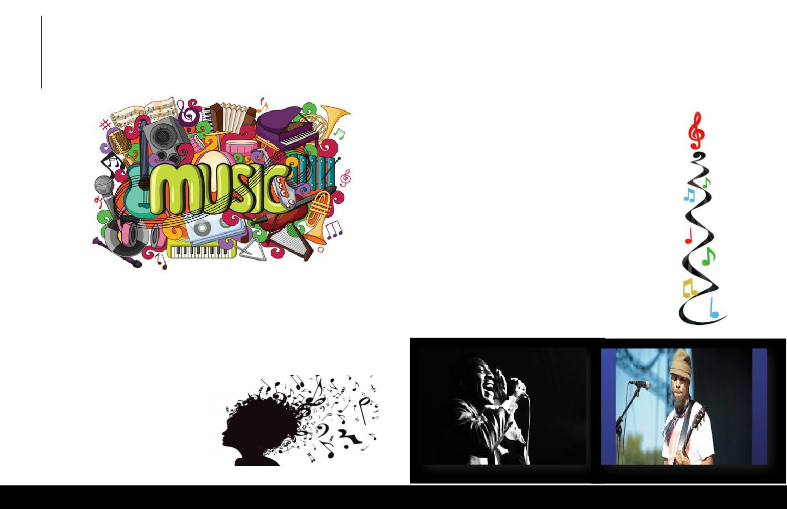
We know that musical tastes begin to
music does sound dissonant to some
solidify as early as age 13 or 14, and
people, but I think the reason is that it’s
1
Old Vs New Music
that they get locked into place pretty
not what they’re used to, so they hear it
firmly in our early 20s. Studies indicate
in a rawer way.
Yassin Ragab
that most of us stop exploring new music
entirely by the time we turn 33, and if a
song was released when you are in your
early teens, that song is likely to remain
quite popular among your age group
throughout your life.
Sometimes, people say that new music is
dissonant, but the fact of the matter is,
except for a brief interlude of 12-tone
music in the first half of the twentieth
century, and some explorations in
microtonality, the harmonic palette has
not usually exceeded bounds first
explored by 16th century composers.
Sometimes, as with Mozart or punk rock
Old music is, by and large, the music
people to hear or get used to. Most new
or modal jazz or Minimalism, new music
that people grow up knowing because
music, also, is very bad, because the
has used only a restricted part of this
it is widely played in society. New
old music tends to be the cream of the
harmonic palette. I don’t doubt that new
music, by definition, is music that
cream and it’s hard for any arbitrary
people have not heard before, and
new musician to compete with that.
about which society has not yet made
up its mind.
New music is either based largely on
the music of the past, such as neo-
Romantic contemporary classical
music, which is mostly very bad, or it is
original, in which case it is difficult for
© Copyright, Riada American School
3/12/2021
18
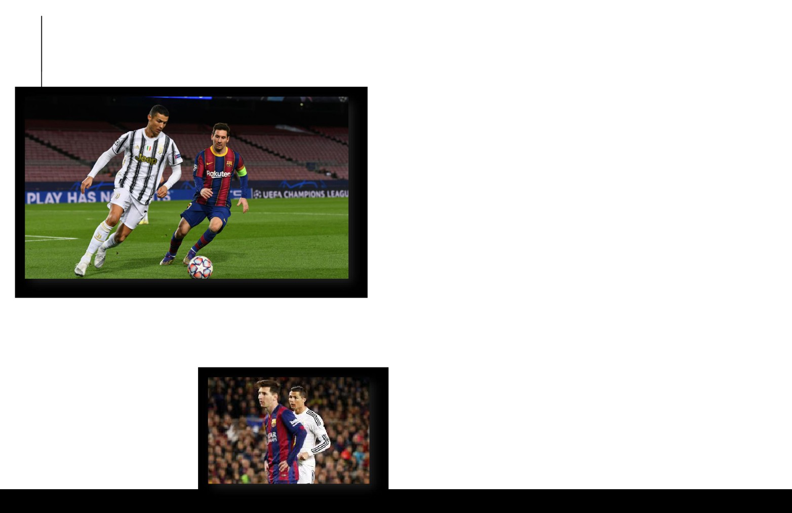
Messi overperforms for his short build,
1. Strength
and Ronaldo underperforms for his huge
1
Ronaldo Vs Messi
Cristiano Ronaldo:
one. It all starts out with a tie, then...
Marwan Abdellatif
Cristiano's 1.85 meters tall and weighs 85
2. Top Speed / Acceleration
Kg so you would expect him to be a bull
physically. But he's not. It might be more
Lionel Messi:
mental than anything, but he shies away
Messi's not as fast as you might think top
from contact and prefers to go down
speed wise, but his agility and
rather than physically outshine the
acceleration in short spaces are the best in
opposing defenders. When he wants to
the world. Period. He's definitely more
though, he can be physical and hold the
quick than fast and can blow opponents
ball with his back towards goal. He
away on pure burst.
certainly doesn't like it and prefers not to
do it, though.
Cristiano Ronaldo:
Lionel Messi:
Cristiano is a sprinter. When in full speed,
he's one of the fastest players in the world.
Messi has very good strength for someone
His acceleration's not that bad either, but
that barely crosses 1.70 meters as their
he's more fast than quick. If he's in fourth
er
height. The Argentinian can shield
The only question remains: who’s
will be determined by points on each
gear sprinting, you just won't catch him.
defenders off the ball and can hold it with
better? This article will try to approach
category they win. Want to know who’ll
But if he's standing still, there's a better
his back towards goal. Anyone that has
this question by analyzing 10 technical
win in speed? Or in free-kick ability?
chance of stopping him.
seen him can also notices he can resist
and physical categories and deciding a
What about sportsmanship? Will it be
opponents lunges and tackles towards his
Who's Faster? Tie
winner in each one. By tackling this
Lionel Messi or Cristiano Ronaldo?
legs, and he can resist the hardest slides
topic (yet again), I expect both Messi
while remaining on his feet.
Both Leo and CR7 exploit defender speed
and Ronaldo fans to disagree with m
wise. While the Argentinian abuses them
But I will try my best to remain
Who's stronger? Tie
on short speed, Ronaldo wins on top speed.
objective and to declare a winner for
Another tie and it's still 0-0.
When all those things are taken into
the attributes I have decided to
account, they're more or less the same
compare them on—both physical an
physically for their rival's defenses.
technical attributes (shooting,
© Copyright, Riada American School
3/12/2021
19
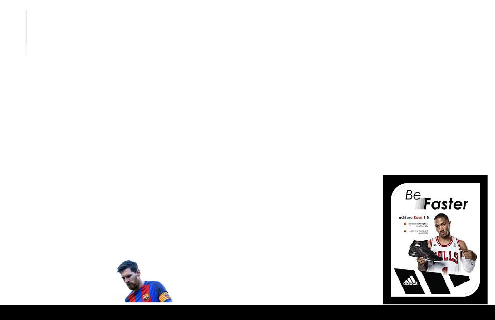
it in. But he is no way a dangerous force in
5. Crossing
that area even if he's not as bad as his
Cristiano Ronaldo:
height would initially suggest.
2
Ronaldo Vs Messi
Cristiano Ronaldo benefited from his time
Cristiano Ronaldo:
Marwan Abdellatif
in England to perfect his crossing
Cristiano is very dangerous as a header
technique. Even though he's not a corner
Messi is definitely not at Xavi's level when
3. Technique
and is also proficient at defending with his
kick taker because of his heading skills
passing the ball, but he has established
head. His 1.85 meter height helps him out,
(more on that later), he's a very good
Cristiano Ronaldo:
himself as a consistent passer and assister
but he also has amazing positioning and
crosser and long passer. It's a shame he
this past two seasons. He also actively
very good jumping skills. When you face
Cristiano has magnificent technique for a
sometimes prefers to take a shot at an odd
participates in Barcelona's play creation.
CR7, one of the main dangers he poses is
player over 1.85 meters. He loves flicks and
angle on goal rather than crossing the ball.
...At least when he actually wants to pass
his aerial game.
tricks and can do basically anything on the
the ball. Sometimes he gets greedy and just
Lionel Messi:
book when the ball is on his feet.
doesn't pass when his teammates are open
Who's the better header? CR7
to make a play.
The farther away the play is from Messi,
Lionel Messi:
It should be a very wide margin win for
the worse he becomes. When he was a
Cristiano Ronaldo:
Ronaldo, but even though Messi is good for
Messi just might be the top technician in
winger, he never excelled at crossing the
his height, the Portuguese star still takes
the world...with everything except his right
ball. And even if he likes to take the corner
Cristiano likes the ball to be in one man’s
this category by a lot. CR7 ties it, and
foot. Other than that, he can control the
kicks at Barcelona, he's not proficient at
feet: Cristiano’s. He does have good skills
we'
ball in every situation with every single
long balls at all. That's probably why
and vision when passing the ball, but he
part of his body.
Barcelona take all those short corners.
just doesn't like to share it at all and wants
to finish plays himself most of the time.
Who's more technical? Messi
Who's a better crosser? Ronaldo
Who's the better passer? Messi
Even with his "one-footedness," Lionel wins
I'd take Ronaldo any day if my game was
this battle because his technique is a little
depending on a cross into the box. Ronaldo
As a passer, I'd take Messi, even if it's just
better than Cristiano's. Still very close to a
takes one back, and it's now 2-1.
because he's the least selfish of the two.
tie though. Messi scores the first one, and
Messi increases his lead to 2-nil.
6. Aerial Football / Heading
he's up 1-0.
Lionel Messi:
4. Passing
Messi is fantastic in the air for his short
Lionel Messi:
height and has scored lots of goals heading
© Copyright, Riada American School
3/12/2021
20
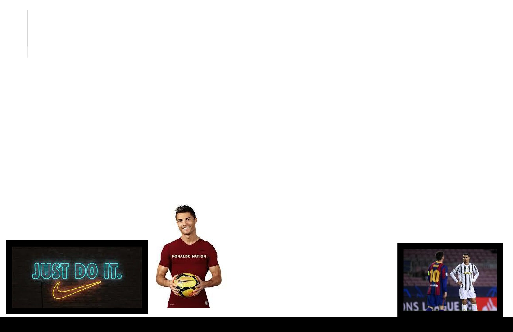
Ronaldo has very good positioning and
8. Free-Kick Taking / Set
creates a lot of scoring opportunities, but
Pieces
his "all-power" approach doesn't serve him
Ronaldo Vs Messi
3
well when he's close to a goal. When he’s
Lionel Messi:
one-on-one against the keeper or with a
Marwan Abdellatif
This one baffles me. Messi certainly has
clear-scoring chance, Cristiano's not as
the touch to take the short free kicks. But
lethal as he should be. He's actually
doesn't take hard long shots on goal, he can
7. Shooting
deadlier when his chances aren't that easy.
the fact he takes the long ones is just not
do it as well, even if it's not his strong suit.
cool. He doesn't have the strength to take
Cristiano Ronaldo:
His strength is accuracy, and at that, he’s
Lionel Messi:
them and they either 1) end up on the
one of the world's best. It's rare to see Leo's
keepers hands or 2) go 50 feet above goal.
Ronaldo certainly enjoys launching
Messi has become a lethal poacher in the
shots end up way off target.
Free kick taking's just not Leo's thing, as
"Ronaldo Rockets" on goal as much as he
area in Barcelona's drawn out No. 9 role. If
much as he might want it to be.
can every game. And that's partly because
Who's a better shooter? Ronaldo
I've seen him push in 40 goals with one
he has one of the world's most powerful and
touch strikes inside the area the past two
Cristiano Ronaldo:
If I were an opposing goalkeeper, I'd be
deadliest shots. With both legs, too. At least
years, I wouldn't be exaggerating. He has
more afraid of a "Ronaldo Rocket" than
when he's on target. But truth is, even
Cristiano's one of the best free-kick takers
lots of thank you’s to give to Villa, Pedro,
anything Messi can provide, even if he has
though he has a fantastic hard shot, most of
today. His "folha seca rocket" and the show
Iniesta and Xavi. But when the play needs
deadly accuracy. If Cristiano's on goal, his
them end up way off target. If he could
he performs before every shot are both
clinical finishing, Leo is right there to
shots are simply unstoppable. That gives
improve his accuracy...imagine the
widely feared. It's true that it's either off
punch it home every time.
CR7 the edge on this one, and he goes on to
possibilities.
target or a goal. But when it's on target...
lead 3-2.
Who's a better goal-scorer? Messi
Yeah...goal.
Lionel Messi:
When they're inside the area and all the
Who's the better free-kick taker?
Messi prefers placing over power when he
ball needs is some gentle, well-placed
Ronaldo
shoots. And even though he normally
pushing, Messi is your man, and Cristiano
is a long way behind him.
Cristiano wins it by a large margin again,
even though for a short central free kick,
I’d actually prefer Messi. Ronaldo scores a
free kick and edges Messi 4-2?
9. Finishing
Cristiano Ronaldo:
© Copyright, Riada American School
3/12/2021
21
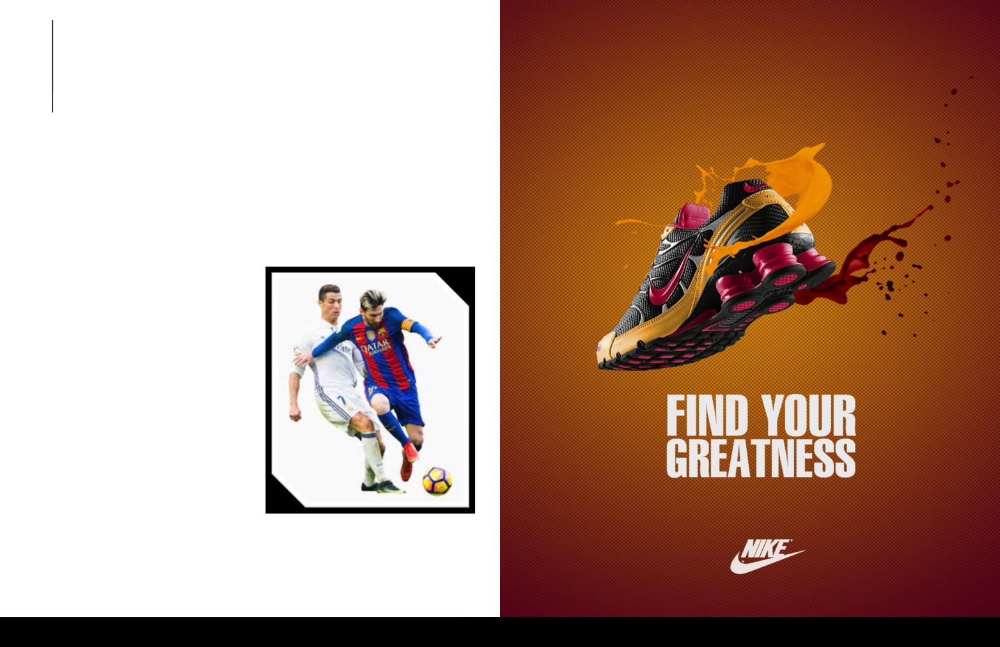
4
Ronaldo Vs Messi
Marwan Abdellatif
Who's the better dribbler?
10. Dribbling
Messi
Lionel Messi:
Cristiano's a good dribbler in his own
No one is better at short, spaced one-on-
right, but Leo goes past him on this one.
one dribbling than Lionel Messi. His
Lionel ties it 4-4.
acceleration, technique and agility all
come into play here, and it's really the
central characteristic that makes Messi
who he is.
Cristiano Ronaldo:
Cristiano's a very good dribbler that
relies more on making his man miss
trough tricks, and he's definitely one of
the best in the world in that regard. But
he struggles when he's standing still and
shies away from tackles.
© Copyright, Riada American School
3/12/2021
22
This magazine was created by the 8th grade of the
Riada American School. Thank you for reading this!
© Copyright, Riada American School